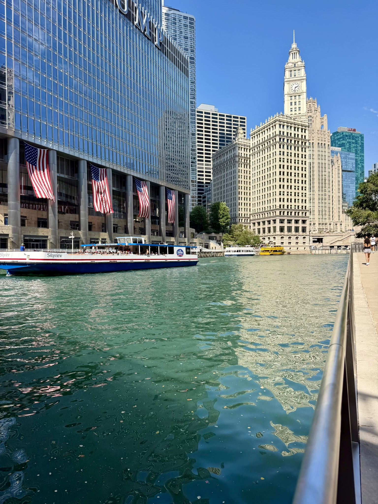
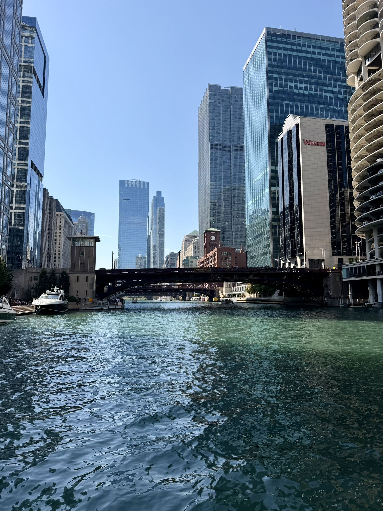
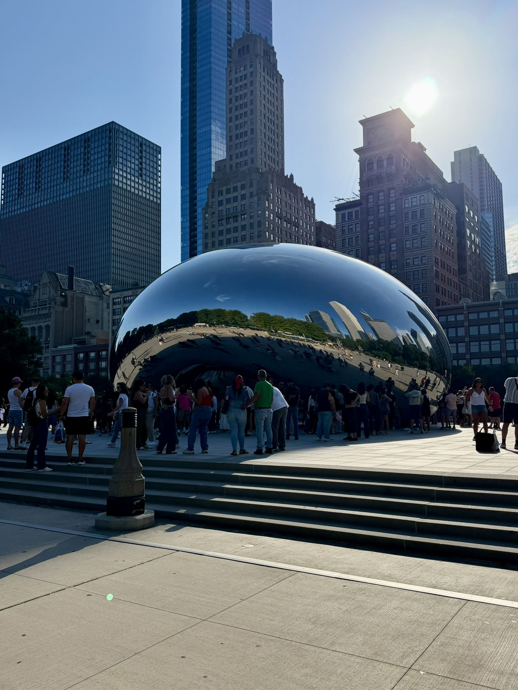
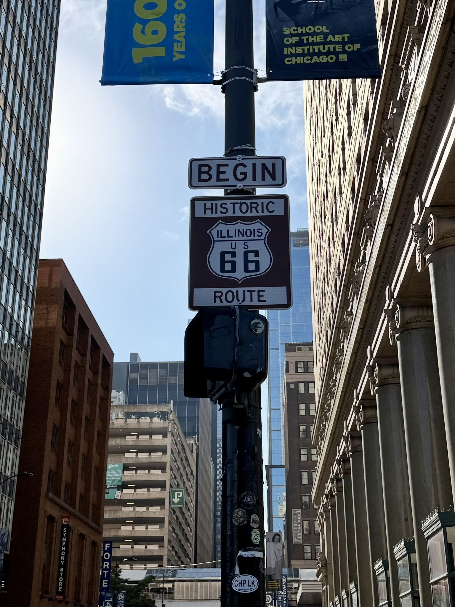
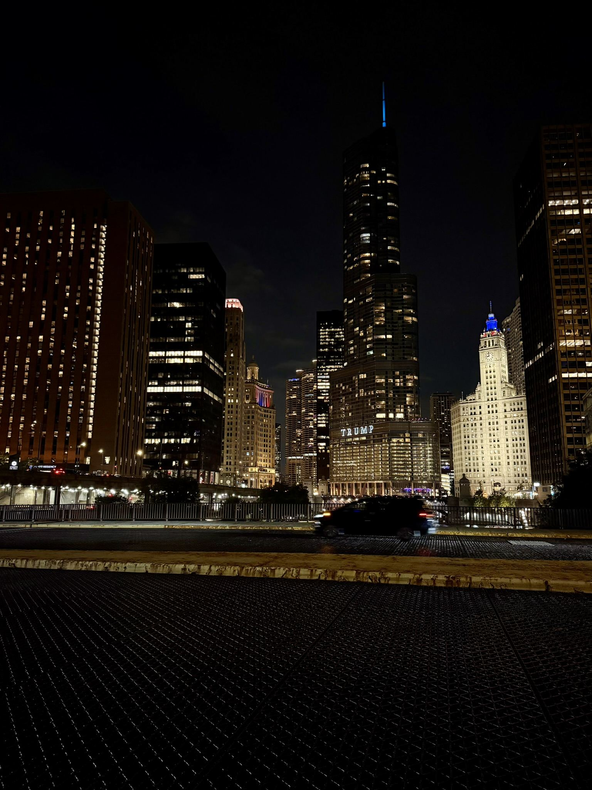
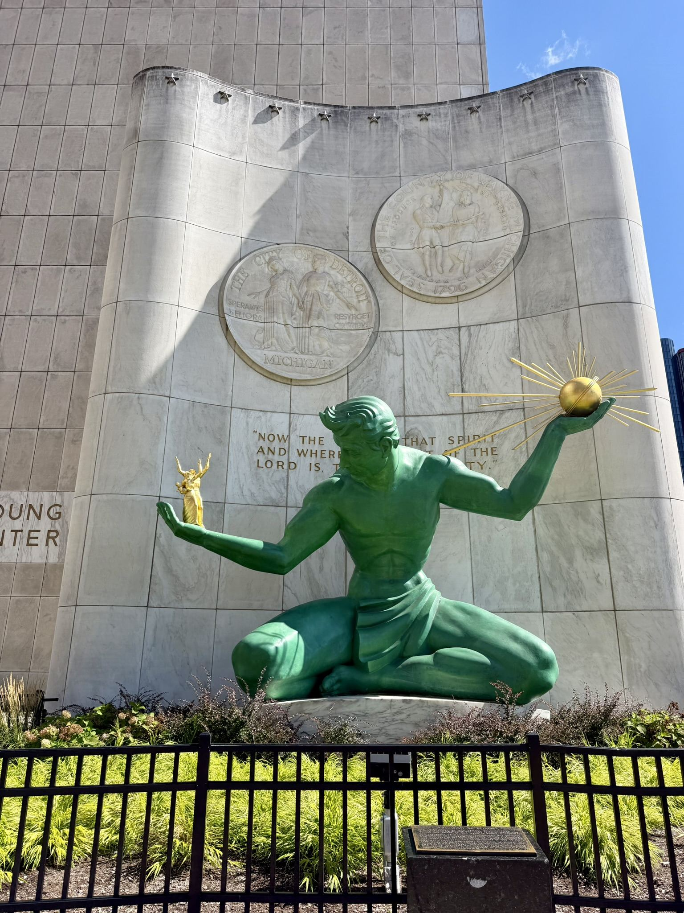
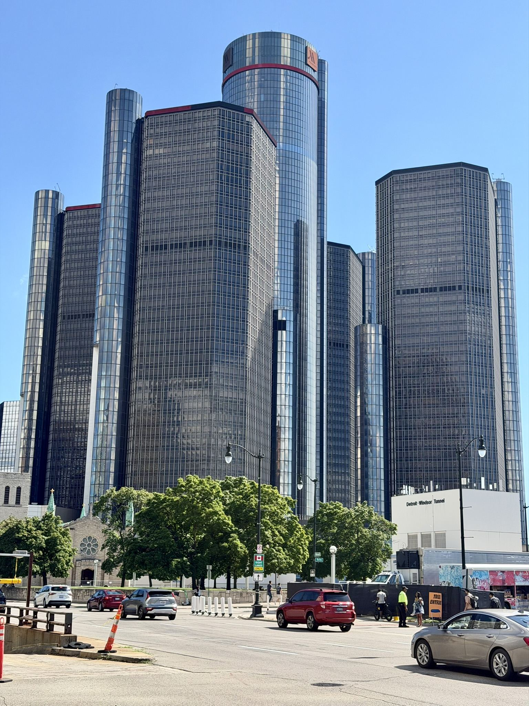
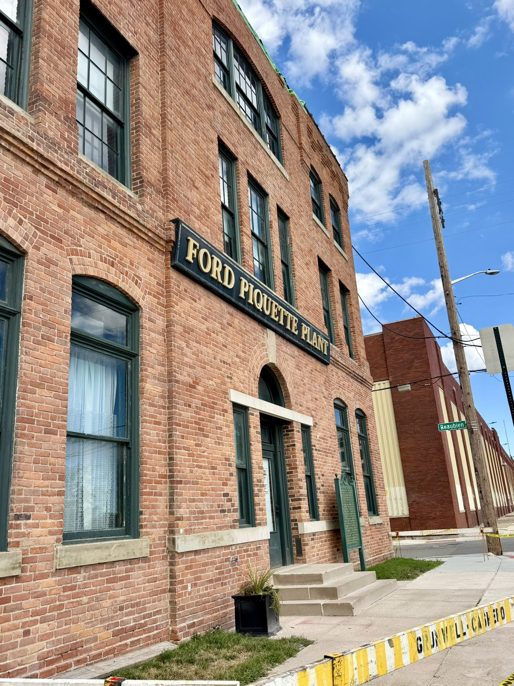
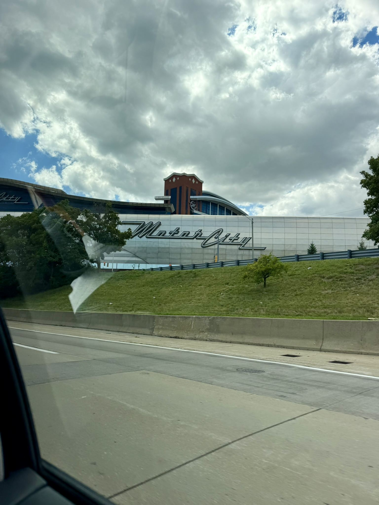

Semaine 10 : Chicago et Detroit
Côté HyphTech
Le projet continue d'avancer tranquillement.
Un long week-end, grâce à mon tuteur
Grâce à l'autorisation de mon tuteur, on est parti le jeudi pour un gros road trip avec Rathush et Killian : direction Chicago, à environ 1 600 km de route depuis Sherbrooke. Un jour férié le lundi suivant (la fête du Travail) nous a permis de partir sur cinq jours, pour un total d'environ 3 500 km parcourus.
Chicago est une ville vraiment impressionnante, avec un beau front de rivière et une architecture qui vaut le détour.





Cap sur Detroit
On a ensuite mis le cap sur Detroit, surnommée Motor City en raison de son histoire industrielle liée à l'automobile. L'occasion de visiter la Ford Piquette Avenue Plant, la toute première usine de Ford.




Un gros week-end, avec beaucoup de route, mais qui en valait vraiment la peine.